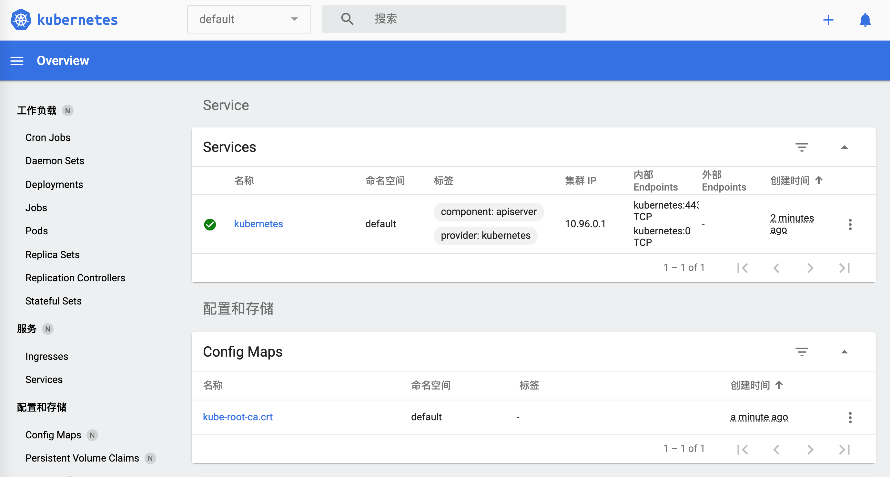
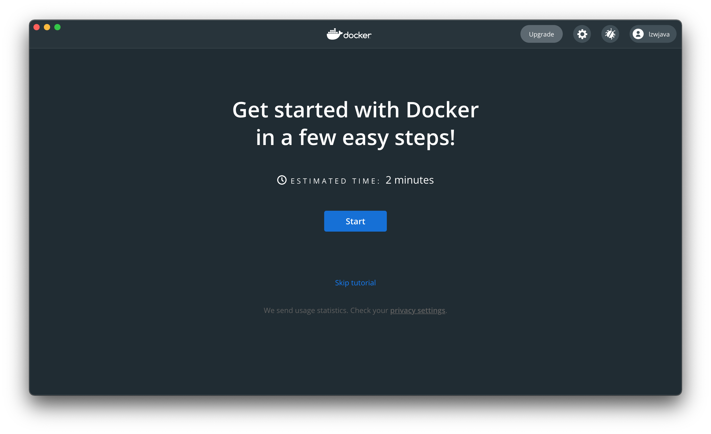
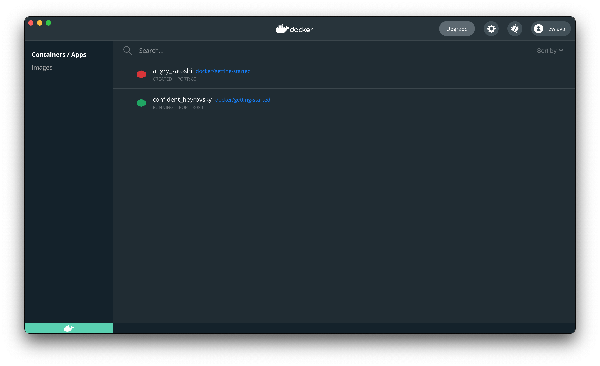
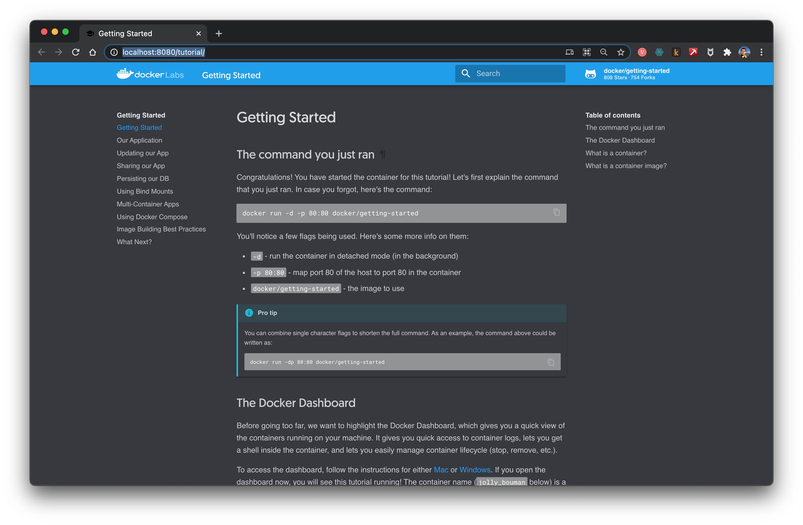
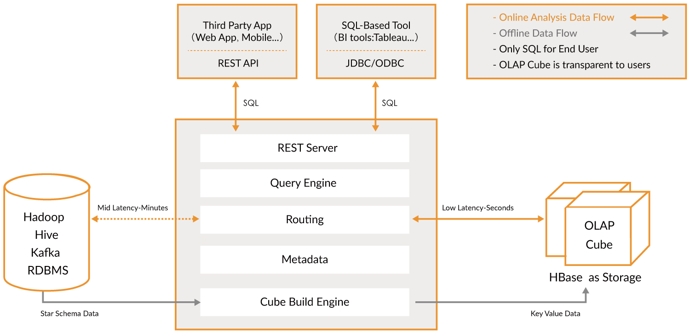

云计算和大数据入门 | 原创
这节课包含以下话题：
- Spark
- Hadoop
- Kubernetes
- Docker
- Flink
- MongoDB
说起云计算，似乎离不开很多的工具，Hadoop、Hive、Hbase、ZooKeeper、Docker、Kubernetes、Spark、Kafka、MongoDB、Flink、Druid、Presto、Kylin、Elastic Search。都有听过吗。这些工具有些我是从大数据工程师、分布式后端工程师的职位描述上找到的。这些都是高薪职位。我们试着把他们都安装上，试着把玩两下。
初探 Spark
官网说，Spark用来处理大规模数据的分析引擎。spark就是一套库。它似乎不像Redis那样分成服务端和客户端。spark就是只在客户端使用的。从官网下载了最新的版本，spark-3.1.1-bin-hadoop3.2.tar。
$ tree . -L 1
.
├── LICENSE
├── NOTICE
├── R
├── README.md
├── RELEASE
├── bin
├── conf
├── data
├── examples
├── jars
├── kubernetes
├── licenses
├── python
├── sbin
└── yarn
11 directories, 4 files
似乎就是各语言编写的一些分析库。
同时官网说可以在Python上直接装依赖库。pip install pyspark
$ pip install pyspark
Collecting pyspark
Downloading pyspark-3.1.1.tar.gz (212.3 MB)
|████████████████████████████████| 212.3 MB 14 kB/s
Collecting py4j==0.10.9
Downloading py4j-0.10.9-py2.py3-none-any.whl (198 kB)
|████████████████████████████████| 198 kB 145 kB/s
Building wheels for collected packages: pyspark
Building wheel for pyspark (setup.py) ... done
Created wheel for pyspark: filename=pyspark-3.1.1-py2.py3-none-any.whl size=212767604 sha256=0b8079e82f3a5bcadad99179902d8c8ff9f8eccad928a469c11b97abdc960b72
Stored in directory: /Users/lzw/Library/Caches/pip/wheels/23/bf/e9/9f3500437422e2ab82246f25a51ee480a44d4efc6c27e50d33
Successfully built pyspark
Installing collected packages: py4j, pyspark
Successfully installed py4j-0.10.9 pyspark-3.1.1
装上了。
这会看官网，有些例子
./bin/run-example SparkPi 10
哦，原来可以运行刚刚下载的安装包里的程序。但出错了。
$ ./bin/run-example SparkPi 10
21/03/11 00:06:15 WARN NativeCodeLoader: Unable to load native-hadoop library for your platform... using builtin-java classes where applicable
21/03/11 00:06:16 INFO ResourceUtils: No custom resources configured for spark.driver.
21/03/11 00:06:16 WARN Utils: Service 'sparkDriver' could not bind on a random free port. You may check whether configuring an appropriate binding address.
Spark is a fast and general processing engine compatible with Hadoop data. It can run in Hadoop clusters through YARN or Spark’s standalone mode, and it can process data in HDFS, HBase, Cassandra, Hive, and any Hadoop InputFormat. It is designed to perform both batch processing (similar to MapReduce) and new workloads like streaming, interactive queries, and machine learning.
出现了好几次hadoop。谷歌了spark depends hadoop 之后，找到这样一段话。看来这依赖于Hadoop格式的数据。让我们先研究 Hadoop。
Hadoop
简单看了官网后。来安装一下。
brew install hadoop
安装的过程中，来了解一下。
The Apache Hadoop software library is a framework that allows for the distributed processing of large data sets across clusters of computers using simple programming models. It is designed to scale up from single servers to thousands of machines, each offering local computation and storage. Rather than rely on hardware to deliver high-availability, the library itself is designed to detect and handle failures at the application layer, so delivering a highly-available service on top of a cluster of computers, each of which may be prone to failures.
就是说 Hadoop 是一套框架，来处理分布式的数据集。这些数据集可能分部在很多计算机上。用很简单的编程模型来处理。它是设计来从单一服务器扩展到千台机器的。与其依赖于硬件的高可用，这个库则设计来在应用层就能检查和处理错误。因此能将高可用的服务部署到集群中，虽然集群中的每台电脑都可能导致失败。
$ brew install hadoop
Error:
homebrew-core is a shallow clone.
homebrew-cask is a shallow clone.
To `brew update`, first run:
git -C /usr/local/Homebrew/Library/Taps/homebrew/homebrew-core fetch --unshallow
git -C /usr/local/Homebrew/Library/Taps/homebrew/homebrew-cask fetch --unshallow
These commands may take a few minutes to run due to the large size of the repositories.
This restriction has been made on GitHub's request because updating shallow
clones is an extremely expensive operation due to the tree layout and traffic of
Homebrew/homebrew-core and Homebrew/homebrew-cask. We don't do this for you
automatically to avoid repeatedly performing an expensive unshallow operation in
CI systems (which should instead be fixed to not use shallow clones). Sorry for
the inconvenience!
==> Downloading https://homebrew.bintray.com/bottles/openjdk-15.0.1.big_sur.bottle.tar.gz
Already downloaded: /Users/lzw/Library/Caches/Homebrew/downloads/d1e3ece4af1d225bc2607eaa4ce85a873d2c6d43757ae4415d195751bc431962--openjdk-15.0.1.big_sur.bottle.tar.gz
==> Downloading https://www.apache.org/dyn/closer.lua?path=hadoop/common/hadoop-3.3.0/hadoop-3.3.0.tar.gz
Already downloaded: /Users/lzw/Library/Caches/Homebrew/downloads/764c6a0ea7352bb8bb505989feee1b36dc628c2dcd6b93fef1ca829d191b4e1e--hadoop-3.3.0.tar.gz
==> Installing dependencies for hadoop: openjdk
==> Installing hadoop dependency: openjdk
==> Pouring openjdk-15.0.1.big_sur.bottle.tar.gz
==> Caveats
For the system Java wrappers to find this JDK, symlink it with
sudo ln -sfn /usr/local/opt/openjdk/libexec/openjdk.jdk /Library/Java/JavaVirtualMachines/openjdk.jdk
openjdk is keg-only, which means it was not symlinked into /usr/local,
because it shadows the macOS `java` wrapper.
If you need to have openjdk first in your PATH run:
echo 'export PATH="/usr/local/opt/openjdk/bin:$PATH"' >> /Users/lzw/.bash_profile
For compilers to find openjdk you may need to set:
export CPPFLAGS="-I/usr/local/opt/openjdk/include"
==> Summary
🍺 /usr/local/Cellar/openjdk/15.0.1: 614 files, 324.9MB
==> Installing hadoop
🍺 /usr/local/Cellar/hadoop/3.3.0: 21,819 files, 954.7MB, built in 2 minutes 15 seconds
==> Upgrading 1 dependent:
maven 3.3.3 -> 3.6.3_1
==> Upgrading maven 3.3.3 -> 3.6.3_1
==> Downloading https://www.apache.org/dyn/closer.lua?path=maven/maven-3/3.6.3/binaries/apache-maven-3.6.3-bin.tar.gz
==> Downloading from https://mirror.olnevhost.net/pub/apache/maven/maven-3/3.6.3/binaries/apache-maven-3.6.3-bin.tar.gz
######################################################################## 100.0%
Error: The `brew link` step did not complete successfully
The formula built, but is not symlinked into /usr/local
Could not symlink bin/mvn
Target /usr/local/bin/mvn
is a symlink belonging to maven. You can unlink it:
brew unlink maven
To force the link and overwrite all conflicting files:
brew link --overwrite maven
To list all files that would be deleted:
brew link --overwrite --dry-run maven
Possible conflicting files are:
/usr/local/bin/mvn -> /usr/local/Cellar/maven/3.3.3/bin/mvn
/usr/local/bin/mvnDebug -> /usr/local/Cellar/maven/3.3.3/bin/mvnDebug
/usr/local/bin/mvnyjp -> /usr/local/Cellar/maven/3.3.3/bin/mvnyjp
==> Summary
🍺 /usr/local/Cellar/maven/3.6.3_1: 87 files, 10.7MB, built in 7 seconds
Removing: /usr/local/Cellar/maven/3.3.3... (92 files, 9MB)
==> Checking for dependents of upgraded formulae...
==> No broken dependents found!
==> Caveats
==> openjdk
For the system Java wrappers to find this JDK, symlink it with
sudo ln -sfn /usr/local/opt/openjdk/libexec/openjdk.jdk /Library/Java/JavaVirtualMachines/openjdk.jdk
openjdk is keg-only, which means it was not symlinked into /usr/local,
because it shadows the macOS `java` wrapper.
If you need to have openjdk first in your PATH run:
echo 'export PATH="/usr/local/opt/openjdk/bin:$PATH"' >> /Users/lzw/.bash_profile
For compilers to find openjdk you may need to set:
export CPPFLAGS="-I/usr/local/opt/openjdk/include"
注意到brew的输出日志中maven没有很好地被链接。接下来，进行强制链接到3.6.3_1版本。
brew link --overwrite maven
Hadoop就安装成功了。
Modules
The project includes these modules:
- Hadoop Common: The common utilities that support the other Hadoop modules.
- Hadoop Distributed File System (HDFS™): A distributed file system that provides high-throughput access to application data.
- Hadoop YARN: A framework for job scheduling and cluster resource management.
- Hadoop MapReduce: A YARN-based system for parallel processing of large data sets.
- Hadoop Ozone: An object store for Hadoop.
说有这些模块。这会敲入hadoop出现了：
$ hadoop
Usage: hadoop [OPTIONS] SUBCOMMAND [SUBCOMMAND OPTIONS]
or hadoop [OPTIONS] CLASSNAME [CLASSNAME OPTIONS]
where CLASSNAME is a user-provided Java class
OPTIONS is none or any of:
--config dir Hadoop config directory
--debug turn on shell script debug mode
--help usage information
buildpaths attempt to add class files from build tree
hostnames list[,of,host,names] hosts to use in slave mode
hosts filename list of hosts to use in slave mode
loglevel level set the log4j level for this command
workers turn on worker mode
SUBCOMMAND is one of:
Admin Commands:
daemonlog get/set the log level for each daemon
Client Commands:
archive create a Hadoop archive
checknative check native Hadoop and compression libraries availability
classpath prints the class path needed to get the Hadoop jar and the required libraries
conftest validate configuration XML files
credential interact with credential providers
distch distributed metadata changer
distcp copy file or directories recursively
dtutil operations related to delegation tokens
envvars display computed Hadoop environment variables
fs run a generic filesystem user client
gridmix submit a mix of synthetic job, modeling a profiled from production load
jar <jar> run a jar file. NOTE: please use "yarn jar" to launch YARN applications, not this command.
jnipath prints the java.library.path
kdiag Diagnose Kerberos Problems
kerbname show auth_to_local principal conversion
key manage keys via the KeyProvider
rumenfolder scale a rumen input trace
rumentrace convert logs into a rumen trace
s3guard manage metadata on S3
trace view and modify Hadoop tracing settings
version print the version
Daemon Commands:
kms run KMS, the Key Management Server
registrydns run the registry DNS server
SUBCOMMAND may print help when invoked w/o parameters or with -h.
官网给了些例子。
$ mkdir input
$ cp etc/hadoop/*.xml input
$ bin/hadoop jar share/hadoop/mapreduce/hadoop-mapreduce-examples-3.2.2.jar grep input output 'dfs[a-z.]+'
$ cat output/*
注意到有share/hadoop/mapreduce/hadoop-mapreduce-examples-3.2.2.jar。这意味着也许有些样例文件我们没有得到。猜测用Homebrew安装会没有这些文件。我们从官网下载了安装文件包。
$ tree . -L 1
.
├── LICENSE-binary
├── LICENSE.txt
├── NOTICE-binary
├── NOTICE.txt
├── README.txt
├── bin
├── etc
├── include
├── lib
├── libexec
├── licenses-binary
├── sbin
└── share
出现了share目录。然而Homebrew真的没有附加的这些文件吗。找到Homebrew安装的目录。
$ type hadoop
hadoop is /usr/local/bin/hadoop
$ ls -alrt /usr/local/bin/hadoop
lrwxr-xr-x 1 lzw admin 33 Mar 11 00:48 /usr/local/bin/hadoop -> ../Cellar/hadoop/3.3.0/bin/hadoop
$ cd /usr/local/Cellar/hadoop/3.3.0
这是在/usr/local/Cellar/hadoop/3.3.0/libexec/share/hadoop下打印的目录树
$ tree . -L 2
.
├── client
│ ├── hadoop-client-api-3.3.0.jar
│ ├── hadoop-client-minicluster-3.3.0.jar
│ └── hadoop-client-runtime-3.3.0.jar
├── common
│ ├── hadoop-common-3.3.0-tests.jar
│ ├── hadoop-common-3.3.0.jar
│ ├── hadoop-kms-3.3.0.jar
│ ├── hadoop-nfs-3.3.0.jar
│ ├── hadoop-registry-3.3.0.jar
│ ├── jdiff
│ ├── lib
│ ├── sources
│ └── webapps
├── hdfs
│ ├── hadoop-hdfs-3.3.0-tests.jar
│ ├── hadoop-hdfs-3.3.0.jar
│ ├── hadoop-hdfs-client-3.3.0-tests.jar
│ ├── hadoop-hdfs-client-3.3.0.jar
│ ├── hadoop-hdfs-httpfs-3.3.0.jar
│ ├── hadoop-hdfs-native-client-3.3.0-tests.jar
│ ├── hadoop-hdfs-native-client-3.3.0.jar
│ ├── hadoop-hdfs-nfs-3.3.0.jar
│ ├── hadoop-hdfs-rbf-3.3.0-tests.jar
│ ├── hadoop-hdfs-rbf-3.3.0.jar
│ ├── jdiff
│ ├── lib
│ ├── sources
│ └── webapps
├── mapreduce
│ ├── hadoop-mapreduce-client-app-3.3.0.jar
│ ├── hadoop-mapreduce-client-common-3.3.0.jar
│ ├── hadoop-mapreduce-client-core-3.3.0.jar
│ ├── hadoop-mapreduce-client-hs-3.3.0.jar
│ ├── hadoop-mapreduce-client-hs-plugins-3.3.0.jar
│ ├── hadoop-mapreduce-client-jobclient-3.3.0-tests.jar
│ ├── hadoop-mapreduce-client-jobclient-3.3.0.jar
│ ├── hadoop-mapreduce-client-nativetask-3.3.0.jar
│ ├── hadoop-mapreduce-client-shuffle-3.3.0.jar
│ ├── hadoop-mapreduce-client-uploader-3.3.0.jar
│ ├── hadoop-mapreduce-examples-3.3.0.jar
│ ├── jdiff
│ ├── lib-examples
│ └── sources
├── tools
│ ├── dynamometer
│ ├── lib
│ ├── resourceestimator
│ ├── sls
│ └── sources
└── yarn
├── csi
├── hadoop-yarn-api-3.3.0.jar
├── hadoop-yarn-applications-catalog-webapp-3.3.0.war
├── hadoop-yarn-applications-distributedshell-3.3.0.jar
├── hadoop-yarn-applications-mawo-core-3.3.0.jar
├── hadoop-yarn-applications-unmanaged-am-launcher-3.3.0.jar
├── hadoop-yarn-client-3.3.0.jar
├── hadoop-yarn-common-3.3.0.jar
├── hadoop-yarn-registry-3.3.0.jar
├── hadoop-yarn-server-applicationhistoryservice-3.3.0.jar
├── hadoop-yarn-server-common-3.3.0.jar
├── hadoop-yarn-server-nodemanager-3.3.0.jar
├── hadoop-yarn-server-resourcemanager-3.3.0.jar
├── hadoop-yarn-server-router-3.3.0.jar
├── hadoop-yarn-server-sharedcachemanager-3.3.0.jar
├── hadoop-yarn-server-tests-3.3.0.jar
├── hadoop-yarn-server-timeline-pluginstorage-3.3.0.jar
├── hadoop-yarn-server-web-proxy-3.3.0.jar
├── hadoop-yarn-services-api-3.3.0.jar
├── hadoop-yarn-services-core-3.3.0.jar
├── lib
├── sources
├── test
├── timelineservice
├── webapps
└── yarn-service-examples
可以看到有很多的jar包。
$ mkdir input
$ ls
bin hadoop-config.sh hdfs-config.sh libexec sbin yarn-config.sh
etc hadoop-functions.sh input mapred-config.sh share
$ cp etc/hadoop/*.xml input
$ cd input/
$ ls
capacity-scheduler.xml hadoop-policy.xml hdfs-site.xml kms-acls.xml mapred-site.xml
core-site.xml hdfs-rbf-site.xml httpfs-site.xml kms-site.xml yarn-site.xml
$ cd ..
$ bin/hadoop jar share/hadoop/mapreduce/hadoop-mapreduce-examples-3.2.2.jar grep input output 'dfs[a-z.]+'
JAR does not exist or is not a normal file: /usr/local/Cellar/hadoop/3.3.0/libexec/share/hadoop/mapreduce/hadoop-mapreduce-examples-3.2.2.jar
$
$ bin/hadoop jar share/hadoop/mapreduce/hadoop-mapreduce-examples-3.3.0.jar grep input output 'dfs[a-z.]+'
2021-03-11 01:54:30,791 WARN util.NativeCodeLoader: Unable to load native-hadoop library for your platform... using builtin-java classes where applicable
2021-03-11 01:54:31,115 INFO impl.MetricsConfig: Loaded properties from hadoop-metrics2.properties
2021-03-11 01:54:31,232 INFO impl.MetricsSystemImpl: Scheduled Metric snapshot period at 10 second(s).
...
照着官网的例子敲。注意到bin/hadoop jar share/hadoop/mapreduce/hadoop-mapreduce-examples-3.2.2.jar grep input ，这里是的jar包前有版本号。因此要换成我们的3.3.0。
日志的最后：
2021-03-11 01:54:35,374 INFO mapreduce.Job: map 100% reduce 100%
2021-03-11 01:54:35,374 INFO mapreduce.Job: Job job_local2087514596_0002 completed successfully
2021-03-11 01:54:35,377 INFO mapreduce.Job: Counters: 30
File System Counters
FILE: Number of bytes read=1204316
FILE: Number of bytes written=3565480
FILE: Number of read operations=0
FILE: Number of large read operations=0
FILE: Number of write operations=0
Map-Reduce Framework
Map input records=1
Map output records=1
Map output bytes=17
Map output materialized bytes=25
Input split bytes=141
Combine input records=0
Combine output records=0
Reduce input groups=1
Reduce shuffle bytes=25
Reduce input records=1
Reduce output records=1
Spilled Records=2
Shuffled Maps =1
Failed Shuffles=0
Merged Map outputs=1
GC time elapsed (ms)=57
Total committed heap usage (bytes)=772800512
Shuffle Errors
BAD_ID=0
CONNECTION=0
IO_ERROR=0
WRONG_LENGTH=0
WRONG_MAP=0
WRONG_REDUCE=0
File Input Format Counters
Bytes Read=123
File Output Format Counters
Bytes Written=23
继续看看。
$ cat output/*
1 dfsadmin
这到底是什么意思呢。不要紧，总之我们把Hadoop跑起来了。并且运行了第一个单机版的计算例子。
Spark
回到 Spark 上。看一个例子。
text_file = sc.textFile("hdfs://...")
counts = text_file.flatMap(lambda line: line.split(" ")) \
.map(lambda word: (word, 1)) \
.reduceByKey(lambda a, b: a + b)
counts.saveAsTextFile("hdfs://...")
这里出现了hdfs文件。查阅后，得知可以这样创建hdfs文件：
hdfs dfs -mkdir /test
来看看hdfs命令。
$ hdfs
Usage: hdfs [OPTIONS] SUBCOMMAND [SUBCOMMAND OPTIONS]
OPTIONS is none or any of:
--buildpaths attempt to add class files from build tree
--config dir Hadoop config directory
--daemon (start|status|stop) operate on a daemon
--debug turn on shell script debug mode
--help usage information
--hostnames list[,of,host,names] hosts to use in worker mode
--hosts filename list of hosts to use in worker mode
--loglevel level set the log4j level for this command
--workers turn on worker mode
SUBCOMMAND is one of:
Admin Commands:
cacheadmin configure the HDFS cache
crypto configure HDFS encryption zones
debug run a Debug Admin to execute HDFS debug commands
dfsadmin run a DFS admin client
dfsrouteradmin manage Router-based federation
ec run a HDFS ErasureCoding CLI
fsck run a DFS filesystem checking utility
haadmin run a DFS HA admin client
jmxget get JMX exported values from NameNode or DataNode.
oev apply the offline edits viewer to an edits file
oiv apply the offline fsimage viewer to an fsimage
oiv_legacy apply the offline fsimage viewer to a legacy fsimage
storagepolicies list/get/set/satisfyStoragePolicy block storage policies
Client Commands:
classpath prints the class path needed to get the hadoop jar and the required libraries
dfs run a filesystem command on the file system
envvars display computed Hadoop environment variables
fetchdt fetch a delegation token from the NameNode
getconf get config values from configuration
groups get the groups which users belong to
lsSnapshottableDir list all snapshottable dirs owned by the current user
snapshotDiff diff two snapshots of a directory or diff the current directory contents with a snapshot
version print the version
Daemon Commands:
balancer run a cluster balancing utility
datanode run a DFS datanode
dfsrouter run the DFS router
diskbalancer Distributes data evenly among disks on a given node
httpfs run HttpFS server, the HDFS HTTP Gateway
journalnode run the DFS journalnode
mover run a utility to move block replicas across storage types
namenode run the DFS namenode
nfs3 run an NFS version 3 gateway
portmap run a portmap service
secondarynamenode run the DFS secondary namenode
sps run external storagepolicysatisfier
zkfc run the ZK Failover Controller daemon
SUBCOMMAND may print help when invoked w/o parameters or with -h.
继续修改代码。
from pyspark.sql import SparkSession
spark = SparkSession.builder.master("local[*]")\
.config('spark.driver.bindAddress', '127.0.0.1')\
.getOrCreate()
sc = spark.sparkContext
text_file = sc.textFile("a.txt")
counts = text_file.flatMap(lambda line: line.split(" ")) \
.map(lambda word: (word, 1)) \
.reduceByKey(lambda a, b: a + b)
counts.saveAsTextFile("b.txt")
注意到.config('spark.driver.bindAddress', '127.0.0.1')很重要。否则会报错误Service 'sparkDriver' could not bind on a random free port. You may check whether configuring an appropriate binding address。
然而，这时又出现了错误。
Caused by: org.apache.spark.api.python.PythonException: Traceback (most recent call last):
File "/usr/local/lib/python3.9/site-packages/pyspark/python/lib/pyspark.zip/pyspark/worker.py", line 473, in main
raise Exception(("Python in worker has different version %s than that in " +
Exception: Python in worker has different version 3.8 than that in driver 3.9, PySpark cannot run with different minor versions. Please check environment variables PYSPARK_PYTHON and PYSPARK_DRIVER_PYTHON are correctly set.
表示运行了不同版本的Python。
修改.bash_profile：
PYSPARK_PYTHON=/usr/local/Cellar/python@3.9/3.9.1_6/bin/python3
PYSPARK_DRIVER_PYTHON=/usr/local/Cellar/python@3.9/3.9.1_6/bin/python3
然而还是报同样的错。了解一番后，可能是因为spark运行的时候，没有载入这个环境变量，没有使用终端默认的环境变量。
需要在代码里设置：
import os
# Set spark environments
os.environ['PYSPARK_PYTHON'] = '/usr/local/Cellar/python@3.9/3.9.1_6/bin/python3'
os.environ['PYSPARK_DRIVER_PYTHON'] = '/usr/local/Cellar/python@3.9/3.9.1_6/bin/python3'
这会运行。
$ python sc.py
21/03/11 02:54:52 WARN NativeCodeLoader: Unable to load native-hadoop library for your platform... using builtin-java classes where applicable
Using Spark's default log4j profile: org/apache/spark/log4j-defaults.properties
Setting default log level to "WARN".
To adjust logging level use sc.setLogLevel(newLevel). For SparkR, use setLogLevel(newLevel).
PythonRDD[6] at RDD at PythonRDD.scala:53
这时生成了b.txt。
├── b.txt
│ ├── _SUCCESS
│ ├── part-00000
│ └── part-00001
打开一下。
$ cat b.txt/part-00000
('college', 1)
('two', 1)
('things', 2)
('worked', 1)
('on,', 1)
('of', 8)
('school,', 2)
('writing', 2)
('programming.', 1)
("didn't", 4)
('then,', 1)
('probably', 1)
('are:', 1)
('short', 1)
('awful.', 1)
('They', 1)
('plot,', 1)
('just', 1)
('characters', 1)
('them', 2)
...
成功了！这是不是很熟悉。这就像在Hadoop例子里的。
$ cat output/*
1 dfsadmin
这些文件就叫HDFS。可见这里用Spark来统计单词。短短几句，很方便的样子。
Kubernetes
接下来捣鼓一下Kubernetes，也叫k8s，中间的8个字母简写为8。它是一套开源系统，来自动化部署、扩增和管理容器程序的。
kubectl命令行工具是用来运行一些命令操作k8s集群。可以用它来部署应用、查看和管理集群资源，来查看日志。
同样可以用Homebrew来安装。
brew install kubectl
输出日志：
==> Downloading https://homebrew.bintray.com/bottles/kubernetes-cli-1.20.1.big_sur.bottle.tar.gz
==> Downloading from https://d29vzk4ow07wi7.cloudfront.net/0b4f08bd1d47cb913d7cd4571e3394c6747dfbad7ff114c5589c8396c1085ecf?response-content-disposition=a
######################################################################## 100.0%
==> Pouring kubernetes-cli-1.20.1.big_sur.bottle.tar.gz
==> Caveats
Bash completion has been installed to:
/usr/local/etc/bash_completion.d
==> Summary
🍺 /usr/local/Cellar/kubernetes-cli/1.20.1: 246 files, 46.1MB
装好了。
$ kubectl version --client
Client Version: version.Info{Major:"1", Minor:"20", GitVersion:"v1.20.1", GitCommit:"c4d752765b3bbac2237bf87cf0b1c2e307844666", GitTreeState:"clean", BuildDate:"2020-12-19T08:38:20Z", GoVersion:"go1.15.5", Compiler:"gc", Platform:"darwin/amd64"}
$ kubectl
kubectl controls the Kubernetes cluster manager.
Find more information at: https://kubernetes.io/docs/reference/kubectl/overview/
Basic Commands (Beginner):
create Create a resource from a file or from stdin.
expose Take a replication controller, service, deployment or pod and expose it as a new Kubernetes Service
run Run a particular image on the cluster
set Set specific features on objects
Basic Commands (Intermediate):
explain Documentation of resources
get Display one or many resources
edit Edit a resource on the server
delete Delete resources by filenames, stdin, resources and names, or by resources and label selector
Deploy Commands:
rollout Manage the rollout of a resource
scale Set a new size for a Deployment, ReplicaSet or Replication Controller
autoscale Auto-scale a Deployment, ReplicaSet, or ReplicationController
Cluster Management Commands:
certificate Modify certificate resources.
cluster-info Display cluster info
top Display Resource (CPU/Memory/Storage) usage.
cordon Mark node as unschedulable
uncordon Mark node as schedulable
drain Drain node in preparation for maintenance
taint Update the taints on one or more nodes
Troubleshooting and Debugging Commands:
describe Show details of a specific resource or group of resources
logs Print the logs for a container in a pod
attach Attach to a running container
exec Execute a command in a container
port-forward Forward one or more local ports to a pod
proxy Run a proxy to the Kubernetes API server
cp Copy files and directories to and from containers.
auth Inspect authorization
debug Create debugging sessions for troubleshooting workloads and nodes
Advanced Commands:
diff Diff live version against would-be applied version
apply Apply a configuration to a resource by filename or stdin
patch Update field(s) of a resource
replace Replace a resource by filename or stdin
wait Experimental: Wait for a specific condition on one or many resources.
kustomize Build a kustomization target from a directory or a remote url.
Settings Commands:
label Update the labels on a resource
annotate Update the annotations on a resource
completion Output shell completion code for the specified shell (bash or zsh)
Other Commands:
api-resources Print the supported API resources on the server
api-versions Print the supported API versions on the server, in the form of "group/version"
config Modify kubeconfig files
plugin Provides utilities for interacting with plugins.
version Print the client and server version information
Usage:
kubectl [flags] [options]
Use "kubectl <command> --help" for more information about a given command.
Use "kubectl options" for a list of global command-line options (applies to all commands).
来创建一个配置文件。
apiVersion: apps/v1
kind: Deployment
metadata:
name: nginx-deployment
spec:
selector:
matchLabels:
app: nginx
minReadySeconds: 5
template:
metadata:
labels:
app: nginx
spec:
containers:
- name: nginx
image: nginx:1.14.2
ports:
- containerPort: 80
$ kubectl apply -f simple_deployment.yaml
The connection to the server localhost:8080 was refused - did you specify the right host or port?
$ kubectl cluster-info
To further debug and diagnose cluster problems, use 'kubectl cluster-info dump'.
The connection to the server localhost:8080 was refused - did you specify the right host or port?
当用官网的终端试着运行下。
$ start.sh
Starting Kubernetes...minikube version: v1.8.1
commit: cbda04cf6bbe65e987ae52bb393c10099ab62014
* minikube v1.8.1 on Ubuntu 18.04
* Using the none driver based on user configuration
* Running on localhost (CPUs=2, Memory=2460MB, Disk=145651MB) ...
* OS release is Ubuntu 18.04.4 LTS
* Preparing Kubernetes v1.17.3 on Docker 19.03.6 ...
- kubelet.resolv-conf=/run/systemd/resolve/resolv.conf
* Launching Kubernetes ...
* Enabling addons: default-storageclass, storage-provisioner
* Configuring local host environment ...
* Done! kubectl is now configured to use "minikube"
* The 'dashboard' addon is enabled
Kubernetes Started
继续回到我们的终端。
$ kubectl version --client
Client Version: version.Info{Major:"1", Minor:"20", GitVersion:"v1.20.1", GitCommit:"c4d752765b3bbac2237bf87cf0b1c2e307844666", GitTreeState:"clean", BuildDate:"2020-12-19T08:38:20Z", GoVersion:"go1.15.5", Compiler:"gc", Platform:"darwin/amd64"}
$ kubectl version
Client Version: version.Info{Major:"1", Minor:"20", GitVersion:"v1.20.1", GitCommit:"c4d752765b3bbac2237bf87cf0b1c2e307844666", GitTreeState:"clean", BuildDate:"2020-12-19T08:38:20Z", GoVersion:"go1.15.5", Compiler:"gc", Platform:"darwin/amd64"}
The connection to the server localhost:8080 was refused - did you specify the right host or port?
有意思的是加上--client 选项并没有报错。
文档说，需要先安装Minikube。
$ brew install minikube
==> Downloading https://homebrew.bintray.com/bottles/minikube-1.16.0.big_sur.bottle.tar.gz
==> Downloading from https://d29vzk4ow07wi7.cloudfront.net/1b6d7d1b97b11b6b07e4fa531c2dc21770da290da9b2816f360fd923e00c85fc?response-content-disposition=a
######################################################################## 100.0%
==> Pouring minikube-1.16.0.big_sur.bottle.tar.gz
==> Caveats
Bash completion has been installed to:
/usr/local/etc/bash_completion.d
==> Summary
🍺 /usr/local/Cellar/minikube/1.16.0: 8 files, 64.6MB
$ minikube start
😄 minikube v1.16.0 on Darwin 11.2.2
🎉 minikube 1.18.1 is available! Download it: https://github.com/kubernetes/minikube/releases/tag/v1.18.1
💡 To disable this notice, run: 'minikube config set WantUpdateNotification false'
✨ Automatically selected the virtualbox driver
💿 Downloading VM boot image ...
> minikube-v1.16.0.iso.sha256: 65 B / 65 B [-------------] 100.00% ? p/s 0s
> minikube-v1.16.0.iso: 212.62 MiB / 212.62 MiB [] 100.00% 5.32 MiB p/s 40s
👍 Starting control plane node minikube in cluster minikube
💾 Downloading Kubernetes v1.20.0 preload ...
> preloaded-images-k8s-v8-v1....: 491.00 MiB / 491.00 MiB 100.00% 7.52 MiB
🔥 Creating virtualbox VM (CPUs=2, Memory=4000MB, Disk=20000MB) ...
❗ This VM is having trouble accessing https://k8s.gcr.io
💡 To pull new external images, you may need to configure a proxy: https://minikube.sigs.k8s.io/docs/reference/networking/proxy/
🐳 Preparing Kubernetes v1.20.0 on Docker 20.10.0 ...
▪ Generating certificates and keys ...
▪ Booting up control plane ...
▪ Configuring RBAC rules ...
🔎 Verifying Kubernetes components...
🌟 Enabled addons: storage-provisioner, default-storageclass
🏄 Done! kubectl is now configured to use "minikube" cluster and "default" namespace by default
接着来访问这个集群。
$ kubectl get po -A
NAMESPACE NAME READY STATUS RESTARTS AGE
kube-system coredns-74ff55c5b-ndbcr 1/1 Running 0 60s
kube-system etcd-minikube 0/1 Running 0 74s
kube-system kube-apiserver-minikube 1/1 Running 0 74s
kube-system kube-controller-manager-minikube 1/1 Running 0 74s
kube-system kube-proxy-g2296 1/1 Running 0 60s
kube-system kube-scheduler-minikube 0/1 Running 0 74s
kube-system storage-provisioner 1/1 Running 1 74s
来打开minikube的控制板。
$ minikube dashboard
🔌 Enabling dashboard ...
🤔 Verifying dashboard health ...
🚀 Launching proxy ...
🤔 Verifying proxy health ...
🎉 Opening http://127.0.0.1:50030/api/v1/namespaces/kubernetes-dashboard/services/http:kubernetes-dashboard:/proxy/ in your default browser...

如何关掉呢。
$ minikube
minikube provisions and manages local Kubernetes clusters optimized for development workflows.
Basic Commands:
start Starts a local Kubernetes cluster
status Gets the status of a local Kubernetes cluster
stop Stops a running local Kubernetes cluster
delete Deletes a local Kubernetes cluster
dashboard Access the Kubernetes dashboard running within the minikube cluster
pause pause Kubernetes
unpause unpause Kubernetes
Images Commands:
docker-env Configure environment to use minikube's Docker daemon
podman-env Configure environment to use minikube's Podman service
cache Add, delete, or push a local image into minikube
Configuration and Management Commands:
addons Enable or disable a minikube addon
config Modify persistent configuration values
profile Get or list the current profiles (clusters)
update-context Update kubeconfig in case of an IP or port change
Networking and Connectivity Commands:
service Returns a URL to connect to a service
tunnel Connect to LoadBalancer services
Advanced Commands:
mount Mounts the specified directory into minikube
ssh Log into the minikube environment (for debugging)
kubectl Run a kubectl binary matching the cluster version
node Add, remove, or list additional nodes
Troubleshooting Commands:
ssh-key Retrieve the ssh identity key path of the specified node
ssh-host Retrieve the ssh host key of the specified node
ip Retrieves the IP address of the specified node
logs Returns logs to debug a local Kubernetes cluster
update-check Print current and latest version number
version Print the version of minikube
Other Commands:
completion Generate command completion for a shell
Use "minikube <command> --help" for more information about a given command.
可见是minikube stop。
回到kuberntes，现在工作正常了。
$ kubectl cluster-info
Kubernetes control plane is running at https://192.168.99.100:8443
KubeDNS is running at https://192.168.99.100:8443/api/v1/namespaces/kube-system/services/kube-dns:dns/proxy
To further debug and diagnose cluster problems, use 'kubectl cluster-info dump'.
当我们打开https://192.168.99.100:8443时，浏览器显示：
{
"kind": "Status",
"apiVersion": "v1",
"metadata": {
},
"status": "Failure",
"message": "forbidden: User \"system:anonymous\" cannot get path \"/\"",
"reason": "Forbidden",
"details": {
},
"code": 403
}
访问https://192.168.99.100:8443/api/v1/namespaces/kube-system/services/kube-dns:dns/proxy：
{
"kind": "Status",
"apiVersion": "v1",
"metadata": {
},
"status": "Failure",
"message": "services \"kube-dns:dns\" is forbidden: User \"system:anonymous\" cannot get resource \"services/proxy\" in API group \"\" in the namespace \"kube-system\"",
"reason": "Forbidden",
"details": {
"name": "kube-dns:dns",
"kind": "services"
},
"code": 403
}
来试试刚刚那个配置。
$ kubectl apply -f simple_deployment.yaml
deployment.apps/nginx-deployment created
有点问题。然而到这里，我们已经把kubernetes跑起来了。先结束掉。后续再玩。
$ minikube stop
✋ Stopping node "minikube" ...
🛑 1 nodes stopped.
检查是否结束。
w$ minikube dashboard
🤷 The control plane node must be running for this command
👉 To start a cluster, run: "minikube start"
Docker
Docker也是一种容器平台，来帮助加速创建、分享、运行现代应用。从官网下载应用。

用客户端有点卡。让我们用命令行。
$ docker
Usage: docker [OPTIONS] COMMAND
A self-sufficient runtime for containers
Options:
--config string Location of client config files (default "/Users/lzw/.docker")
-c, --context string Name of the context to use to connect to the daemon (overrides DOCKER_HOST env var and default context set with "docker
context use")
-D, --debug Enable debug mode
-H, --host list Daemon socket(s) to connect to
-l, --log-level string Set the logging level ("debug"|"info"|"warn"|"error"|"fatal") (default "info")
--tls Use TLS; implied by --tlsverify
--tlscacert string Trust certs signed only by this CA (default "/Users/lzw/.docker/ca.pem")
--tlscert string Path to TLS certificate file (default "/Users/lzw/.docker/cert.pem")
--tlskey string Path to TLS key file (default "/Users/lzw/.docker/key.pem")
--tlsverify Use TLS and verify the remote
-v, --version Print version information and quit
Management Commands:
app* Docker App (Docker Inc., v0.9.1-beta3)
builder Manage builds
buildx* Build with BuildKit (Docker Inc., v0.5.1-docker)
config Manage Docker configs
container Manage containers
context Manage contexts
image Manage images
manifest Manage Docker image manifests and manifest lists
network Manage networks
node Manage Swarm nodes
plugin Manage plugins
scan* Docker Scan (Docker Inc., v0.5.0)
secret Manage Docker secrets
service Manage services
stack Manage Docker stacks
swarm Manage Swarm
system Manage Docker
trust Manage trust on Docker images
volume Manage volumes
Commands:
attach Attach local standard input, output, and error streams to a running container
build Build an image from a Dockerfile
commit Create a new image from a container's changes
cp Copy files/folders between a container and the local filesystem
create Create a new container
diff Inspect changes to files or directories on a container's filesystem
events Get real time events from the server
exec Run a command in a running container
export Export a container's filesystem as a tar archive
history Show the history of an image
images List images
import Import the contents from a tarball to create a filesystem image
info Display system-wide information
inspect Return low-level information on Docker objects
kill Kill one or more running containers
load Load an image from a tar archive or STDIN
login Log in to a Docker registry
logout Log out from a Docker registry
logs Fetch the logs of a container
pause Pause all processes within one or more containers
port List port mappings or a specific mapping for the container
ps List containers
pull Pull an image or a repository from a registry
push Push an image or a repository to a registry
rename Rename a container
restart Restart one or more containers
rm Remove one or more containers
rmi Remove one or more images
run Run a command in a new container
save Save one or more images to a tar archive (streamed to STDOUT by default)
search Search the Docker Hub for images
start Start one or more stopped containers
stats Display a live stream of container(s) resource usage statistics
stop Stop one or more running containers
tag Create a tag TARGET_IMAGE that refers to SOURCE_IMAGE
top Display the running processes of a container
unpause Unpause all processes within one or more containers
update Update configuration of one or more containers
version Show the Docker version information
wait Block until one or more containers stop, then print their exit codes
Run 'docker COMMAND --help' for more information on a command.
To get more help with docker, check out our guides at https://docs.docker.com/go/guides/
照着教程试试。
$ docker run -d -p 80:80 docker/getting-started
Unable to find image 'docker/getting-started:latest' locally
latest: Pulling from docker/getting-started
aad63a933944: Pull complete
b14da7a62044: Pull complete
343784d40d66: Pull complete
6f617e610986: Pull complete
Digest: sha256:d2c4fb0641519ea208f20ab03dc40ec2a5a53fdfbccca90bef14f870158ed577
Status: Downloaded newer image for docker/getting-started:latest
815f13fc8f99f6185257980f74c349e182842ca572fe60ff62cbb15641199eaf
docker: Error response from daemon: Ports are not available: listen tcp 0.0.0.0:80: bind: address already in use.
改个端口。
$ docker run -d -p 8080:80 docker/getting-started
45bb95fa1ae80adc05cc498a1f4f339c45c51f7a8ae1be17f5b704853a5513a5

打开浏览器，说明我们把docker运行起来了。

停掉容器。用上刚刚返回的ID。
$ docker stop 45bb95fa1ae80adc05cc498a1f4f339c45c51f7a8ae1be17f5b704853a5513a5
45bb95fa1ae80adc05cc498a1f4f339c45c51f7a8ae1be17f5b704853a5513a5
这时已经打不开网址了。
这说明docker像是虚拟机。
Flink
打开官网。

Flink是说数据流的Stateful计算。Stateful指的是什么？暂时还不明白。上面这个图还是很有趣的。来试试看。
说是需要Java环境。
$ java -version
java version "1.8.0_151"
Java(TM) SE Runtime Environment (build 1.8.0_151-b12)
Java HotSpot(TM) 64-Bit Server VM (build 25.151-b12, mixed mode)
从官网下载最新版本 flink-1.12.2-bin-scala_2.11.tar。
$ ./bin/start-cluster.sh
Starting cluster.
Starting standalonesession daemon on host lzwjava.
Starting taskexecutor daemon on host lzwjava.
$ ./bin/flink run examples/streaming/WordCount.jar
Executing WordCount example with default input data set.
Use --input to specify file input.
Printing result to stdout. Use --output to specify output path.
Job has been submitted with JobID 60f37647c20c2a6654359bd34edab807
Program execution finished
Job with JobID 60f37647c20c2a6654359bd34edab807 has finished.
Job Runtime: 757 ms
$ tail log/flink-*-taskexecutor-*.out
(nymph,1)
(in,3)
(thy,1)
(orisons,1)
(be,4)
(all,2)
(my,1)
(sins,1)
(remember,1)
(d,4)
$ ./bin/stop-cluster.sh
Stopping taskexecutor daemon (pid: 41812) on host lzwjava.
嗯，上手成功。可见这跟Spark很像。
Kylin
来打开官网。
Apache Kylin™ is an open source, distributed Analytical Data Warehouse for Big Data; it was designed to provide OLAP (Online Analytical Processing) capability in the big data era. By renovating the multi-dimensional cube and precalculation technology on Hadoop and Spark, Kylin is able to achieve near constant query speed regardless of the ever-growing data volume. Reducing query latency from minutes to sub-second, Kylin brings online analytics back to big data.
Apache Kylin™ lets you query billions of rows at sub-second latency in 3 steps.
- Identify a Star/Snowflake Schema on Hadoop.
- Build Cube from the identified tables.
- Query using ANSI-SQL and get results in sub-second, via ODBC, JDBC or RESTful API.

大概就是分析大数据的一层。用它可以查得非常快。作为桥梁。
可惜当前只能在Linux环境下使用。回头再来折腾。
MongoDB
这也是一种数据库。试试安装。
$ brew tap mongodb/brew
==> Tapping mongodb/brew
Cloning into '/usr/local/Homebrew/Library/Taps/mongodb/homebrew-brew'...
remote: Enumerating objects: 63, done.
remote: Counting objects: 100% (63/63), done.
remote: Compressing objects: 100% (62/62), done.
remote: Total 566 (delta 21), reused 6 (delta 1), pack-reused 503
Receiving objects: 100% (566/566), 121.78 KiB | 335.00 KiB/s, done.
Resolving deltas: 100% (259/259), done.
Tapped 11 formulae (39 files, 196.2KB).
$ brew install mongodb-community@4.4
==> Installing mongodb-community from mongodb/brew
==> Downloading https://fastdl.mongodb.org/tools/db/mongodb-database-tools-macos-x86_64-100.3.0.zip
######################################################################## 100.0%
==> Downloading https://fastdl.mongodb.org/osx/mongodb-macos-x86_64-4.4.3.tgz
######################################################################## 100.0%
==> Installing dependencies for mongodb/brew/mongodb-community: mongodb-database-tools
==> Installing mongodb/brew/mongodb-community dependency: mongodb-database-tools
Error: The `brew link` step did not complete successfully
The formula built, but is not symlinked into /usr/local
Could not symlink bin/bsondump
Target /usr/local/bin/bsondump
is a symlink belonging to mongodb. You can unlink it:
brew unlink mongodb
To force the link and overwrite all conflicting files:
brew link --overwrite mongodb-database-tools
To list all files that would be deleted:
brew link --overwrite --dry-run mongodb-database-tools
Possible conflicting files are:
/usr/local/bin/bsondump -> /usr/local/Cellar/mongodb/3.0.7/bin/bsondump
/usr/local/bin/mongodump -> /usr/local/Cellar/mongodb/3.0.7/bin/mongodump
/usr/local/bin/mongoexport -> /usr/local/Cellar/mongodb/3.0.7/bin/mongoexport
/usr/local/bin/mongofiles -> /usr/local/Cellar/mongodb/3.0.7/bin/mongofiles
/usr/local/bin/mongoimport -> /usr/local/Cellar/mongodb/3.0.7/bin/mongoimport
/usr/local/bin/mongorestore -> /usr/local/Cellar/mongodb/3.0.7/bin/mongorestore
/usr/local/bin/mongostat -> /usr/local/Cellar/mongodb/3.0.7/bin/mongostat
/usr/local/bin/mongotop -> /usr/local/Cellar/mongodb/3.0.7/bin/mongotop
==> Summary
🍺 /usr/local/Cellar/mongodb-database-tools/100.3.0: 13 files, 154MB, built in 11 seconds
==> Installing mongodb/brew/mongodb-community
Error: The `brew link` step did not complete successfully
The formula built, but is not symlinked into /usr/local
Could not symlink bin/mongo
Target /usr/local/bin/mongo
is a symlink belonging to mongodb. You can unlink it:
brew unlink mongodb
To force the link and overwrite all conflicting files:
brew link --overwrite mongodb-community
To list all files that would be deleted:
brew link --overwrite --dry-run mongodb-community
Possible conflicting files are:
/usr/local/bin/mongo -> /usr/local/Cellar/mongodb/3.0.7/bin/mongo
/usr/local/bin/mongod -> /usr/local/Cellar/mongodb/3.0.7/bin/mongod
/usr/local/bin/mongos -> /usr/local/Cellar/mongodb/3.0.7/bin/mongos
==> Caveats
To have launchd start mongodb/brew/mongodb-community now and restart at login:
brew services start mongodb/brew/mongodb-community
Or, if you don't want/need a background service you can just run:
mongod --config /usr/local/etc/mongod.conf
==> Summary
🍺 /usr/local/Cellar/mongodb-community/4.4.3: 11 files, 156.8MB, built in 10 seconds
==> Caveats
==> mongodb-community
To have launchd start mongodb/brew/mongodb-community now and restart at login:
brew services start mongodb/brew/mongodb-community
Or, if you don't want/need a background service you can just run:
mongod --config /usr/local/etc/mongod.conf
之前我安装一个旧版本的。解除一下链接。
$ brew unlink mongodb
Unlinking /usr/local/Cellar/mongodb/3.0.7... 11 symlinks removed
$ mongod --version
db version v4.4.3
Build Info: {
"version": "4.4.3",
"gitVersion": "913d6b62acfbb344dde1b116f4161360acd8fd13",
"modules": [],
"allocator": "system",
"environment": {
"distarch": "x86_64",
"target_arch": "x86_64"
}
}
接着运行mongod启动mongo数据库服务器。然而第一次启动时说/data/db不存在。我们创建一个目录，~/mongodb ，这里来保存数据库文件。
$ mongod --dbpath ~/mongodb
输出为：
{"t":{"$date":"2021-03-11T18:17:32.838+08:00"},"s":"I", "c":"CONTROL", "id":23285, "ctx":"main","msg":"Automatically disabling TLS 1.0, to force-enable TLS 1.0 specify --sslDisabledProtocols 'none'"}
{"t":{"$date":"2021-03-11T18:17:32.842+08:00"},"s":"W", "c":"ASIO", "id":22601, "ctx":"main","msg":"No TransportLayer configured during NetworkInterface startup"}
{"t":{"$date":"2021-03-11T18:17:32.842+08:00"},"s":"I", "c":"NETWORK", "id":4648602, "ctx":"main","msg":"Implicit TCP FastOpen in use."}
{"t":{"$date":"2021-03-11T18:17:32.842+08:00"},"s":"I", "c":"STORAGE", "id":4615611, "ctx":"initandlisten","msg":"MongoDB starting","attr":{"pid":46256,"port":27017,"dbPath":"/Users/lzw/mongodb","architecture":"64-bit","host":"lzwjava"}}
{"t":{"$date":"2021-03-11T18:17:32.842+08:00"},"s":"I", "c":"CONTROL", "id":23403, "ctx":"initandlisten","msg":"Build Info","attr":{"buildInfo":{"version":"4.4.3","gitVersion":"913d6b62acfbb344dde1b116f4161360acd8fd13","modules":[],"allocator":"system","environment":{"distarch":"x86_64","target_arch":"x86_64"}}}}
{"t":{"$date":"2021-03-11T18:17:32.843+08:00"},"s":"I", "c":"CONTROL", "id":51765, "ctx":"initandlisten","msg":"Operating System","attr":{"os":{"name":"Mac OS X","version":"20.3.0"}}}
...
可见都是JSON格式。MongoDB就是一切数据文件都是用JSON格式来保存的。接着，打开另外一个终端标签。
$ mongo
MongoDB shell version v4.4.3
connecting to: mongodb://127.0.0.1:27017/?compressors=disabled&gssapiServiceName=mongodb
Implicit session: session { "id" : UUID("4f55c561-70d3-4289-938d-4b90a284891f") }
MongoDB server version: 4.4.3
---
The server generated these startup warnings when booting:
2021-03-11T18:17:33.743+08:00: Access control is not enabled for the database. Read and write access to data and configuration is unrestricted
2021-03-11T18:17:33.743+08:00: This server is bound to localhost. Remote systems will be unable to connect to this server. Start the server with --bind_ip <address> to specify which IP addresses it should serve responses from, or with --bind_ip_all to bind to all interfaces. If this behavior is desired, start the server with --bind_ip 127.0.0.1 to disable this warning
2021-03-11T18:17:33.743+08:00: Soft rlimits too low
2021-03-11T18:17:33.743+08:00: currentValue: 4864
2021-03-11T18:17:33.743+08:00: recommendedMinimum: 64000
---
---
Enable MongoDB's free cloud-based monitoring service, which will then receive and display
metrics about your deployment (disk utilization, CPU, operation statistics, etc).
The monitoring data will be available on a MongoDB website with a unique URL accessible to you
and anyone you share the URL with. MongoDB may use this information to make product
improvements and to suggest MongoDB products and deployment options to you.
To enable free monitoring, run the following command: db.enableFreeMonitoring()
To permanently disable this reminder, run the following command: db.disableFreeMonitoring()
接着可以尝试插入数据、查询数据。
> db.inventory.insertOne(
... { item: "canvas", qty: 100, tags: ["cotton"], size: { h: 28, w: 35.5, uom: "cm" } }
... )
{
"acknowledged" : true,
"insertedId" : ObjectId("6049ef91b653541cf355facb")
}
>
> db.inventory.find()
{ "_id" : ObjectId("6049ef91b653541cf355facb"), "item" : "canvas", "qty" : 100, "tags" : [ "cotton" ], "size" : { "h" : 28, "w" : 35.5, "uom" : "cm" } }
最后
先到这儿。后面我们再上手别的工具。我们做这些意义是什么。大概是先有个脉络。万事开头难，而我们一上来就把这些全部折腾一遍。这给了我们信心，接下来，就是更多折腾这些软件了。
练习
- 学生像上面一样类似探索一遍。